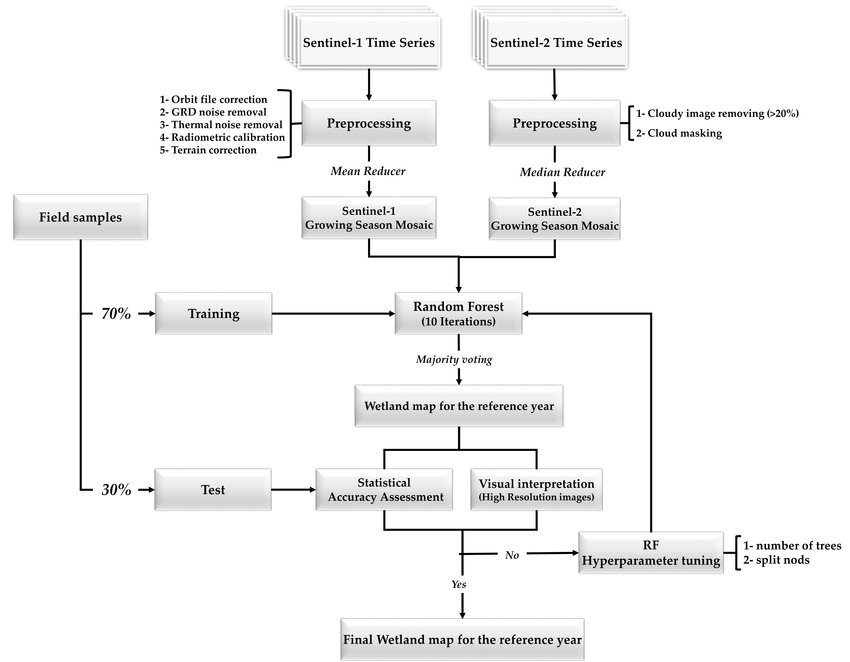

6 Week 6
Google Earth Engine
6.1 Summary
6.1.1 What is it?
Geospatial data processing & analysis cloud-based platform powered by Google; It hosts petabytes of over 40 years of remotely-sensed data, such as Landsat, MODIS, National Oceanographic and Atmospheric Administration Advanced Very High Resolution Radiometer (NOAA AVHRR), Sentinel 1, 2, 3 and 5-P; and Advanced Land Observing Satellite (ALOS) data (Gorelick et al. 2017). MODIS collections for example, provide a twice a day global coverage.
GEE platform data is publicly available and is designed to be used with an explorer web app. It also provides various machine learning algorithms based on Google’s computational infrastructure and allows for high-speed parallel processing. In addition it provides library of APIs enabling the use of JavaScript and Python for analysis (Tamiminia et al. 2020).
This tool enables for analysis and visualizing big geospatial data without access to supercomputer or specialized coding expertise (cool!)
6.2 Applications
Overall, the Google Earth Engine has a vast and growing presence across the current literature. It has found its applications in the analysis of many societal issues such as: deforestation, drought, disaster, disease, food security, water management, climate monitoring, and environmental protection, as pointed by Gorelick et al. (2017).
Since GEE is a rather multidisciplinary tool with many applications, I will focus on one particular research that I found quite interesting, i.e. application for wetland mapping and monitoring using sentinel data. Fekri et al. (2021) presents its methodology (Figure 1) using a combination of Sentinel-1 and Sentinel-2 images and the pixel-based Random Forest (RF) classifier within GEE. Wetland maps were generated with a 10-m spatial resolution which yielded Overall Accuracy and Kappa coefficient values of respectively, 97.98% and 0.97, which indicates the high efficiency of the proposed method in mapping of this ecosystem. It has been pointed that despite GEE offering a preprocessed data, the Sentinel-1 scenes included speckle noise, which has a negative impact on the classification results as it has been concluded by other studies (Adeli et al. 2020). This signals as a reminder for further research to ensure pre-processing steps in their methodologies. This study proved to result in a time-saving and cost-efficient method of intensive field data collection, allowing to map and monitor important environmental changes.

Considering the numerous advantages of Google Earth Engine, it is easy to forget about its negative externalities! As it has been noted by Wilkinson et al. (2024), “A simple band arithmetic function applied to a Landsat 9 scene using Google Earth Engine (GEE) generated CO2 equivalent (e) emissions of 0.042–0.69 g CO2e (locally) and 0.13–0.45 g CO2e”. There have been many studies signaling that data centres are already producing CO2 emissions similar in a scale to emissions from aviation (Lucivero 2020). I think this information should be treated as a motivation to seek more transparency from cloud services regarding their data life-cycle impacts, and the actual cost of cloud computation.
6.3 Reflections
This week I guess I embedded some of the reflective notion within the part above as well. Nevertheless, it is extremely interesting to see the exponential increase in number of articles published regarding GEE. Availability of this data, even though it still requires expertise to use, has opened many opportunities for researches from around the world, and even hobbyists. This is a great step towards democratization of data access and distribution of power. Nevertheless, with great power comes great responsibility! As I mentioned earlier, all of the consequences need to be taken into account, e.g. carbon footprint (!), insufficient data centres’ environmental policies, etc. At the end of the day, there is no such thing as a free lunch.